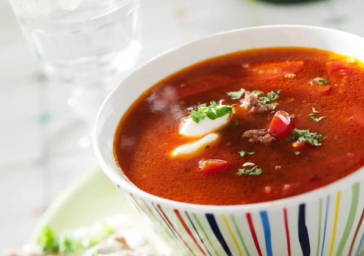

Gulaschsoppa på nötfärs
Mustig gulaschsoppa med färs, potatis och morötter.
Den blir ännu godare om du gör den dagen innan du ska äta den.
Servera gärna med en klick matlagningsyoghurt och en skiva knäckebröd.
Receptet är från Viktväktarna
och finns på Köket.se

Gör så här
- Skala lök, vitlök, potatis och morot. Hacka lök och vitlök, skär potatis, morot och paprika i tärningar.
- Fräs potatis, grönsaker och nötfärs i olja i en kastrull.
-
Tillsätt vatten, buljongtärning, krossade tomater, tomatpuré, paprikapulver och kummin.
Låt småkoka ca 15-20 minuter eller till potatisen mjuknat. Smaka av med salt och peppar.